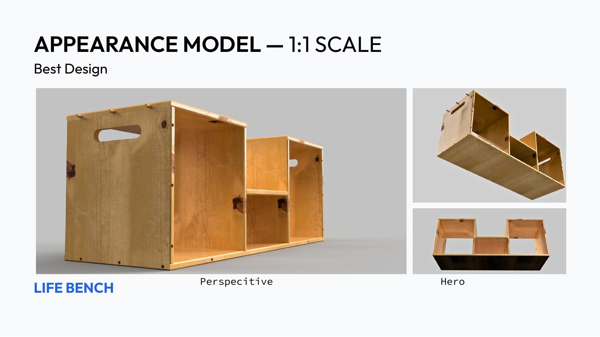
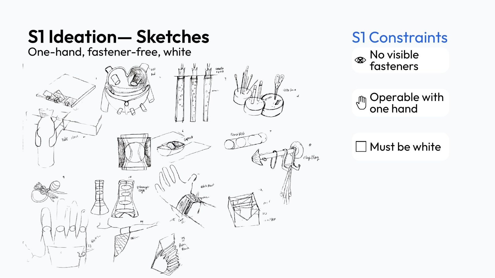
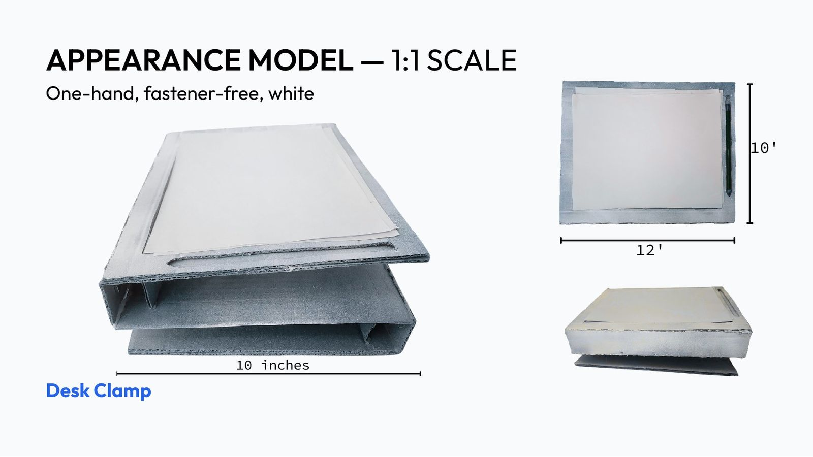
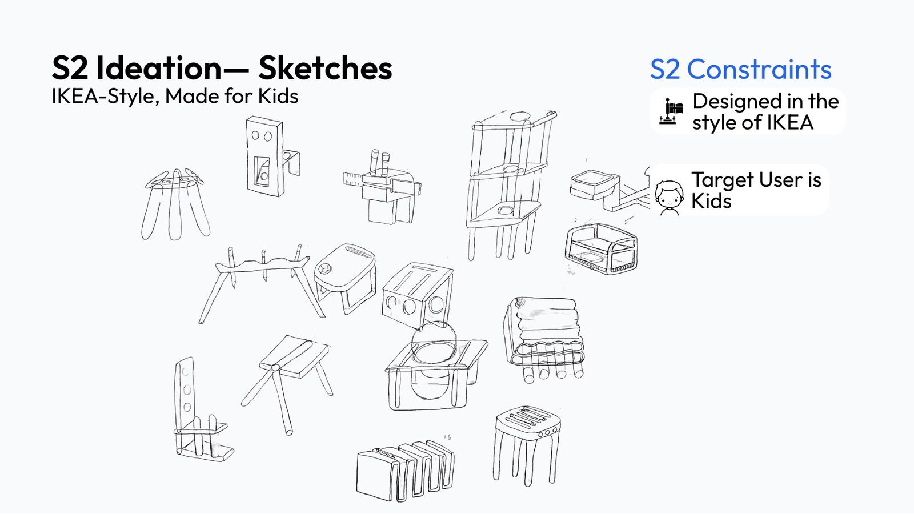
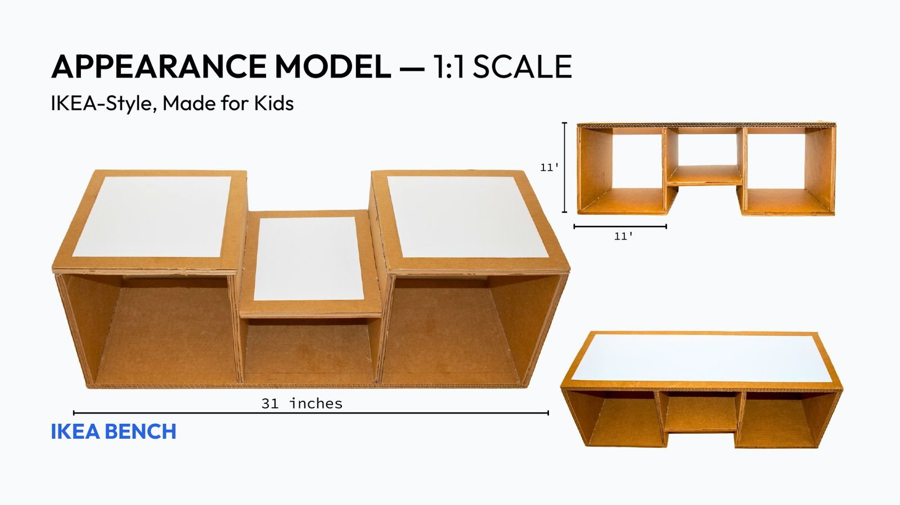
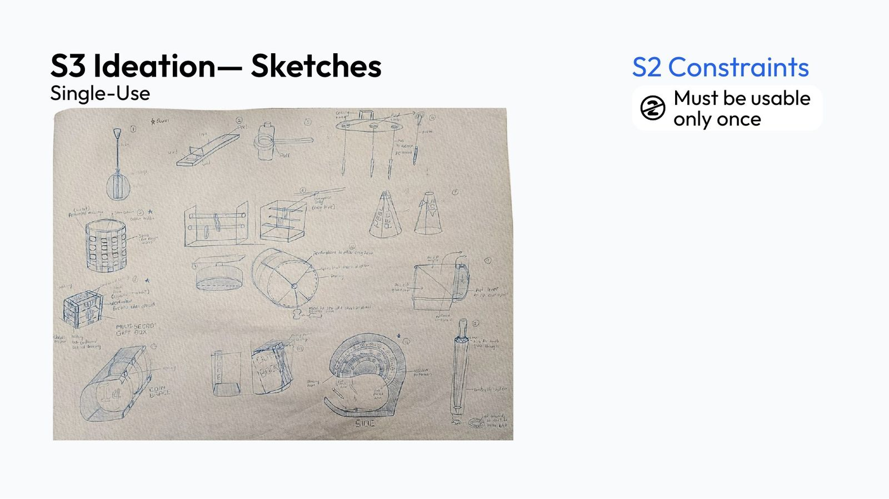
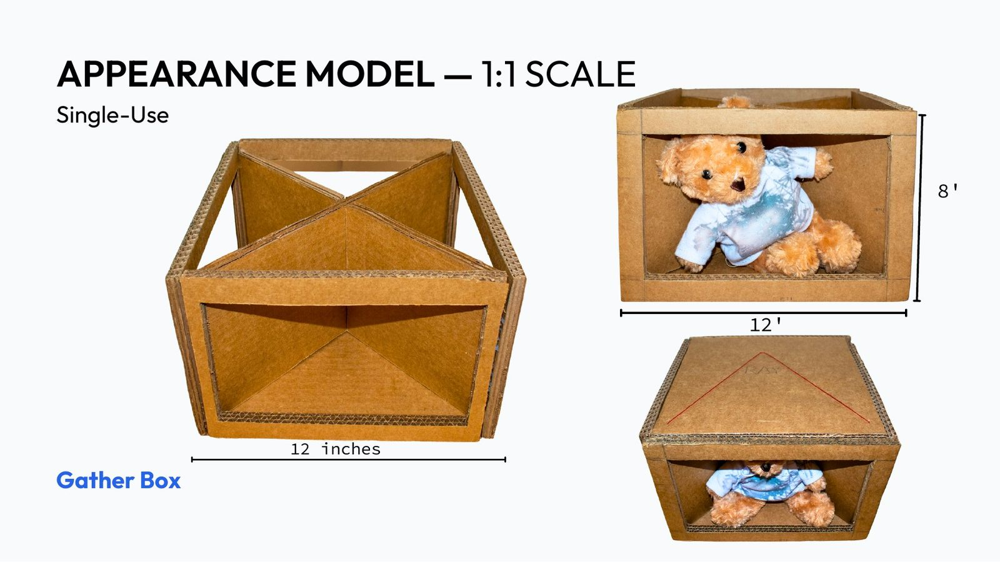
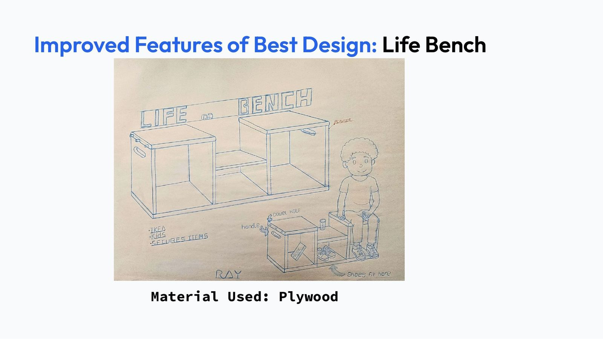
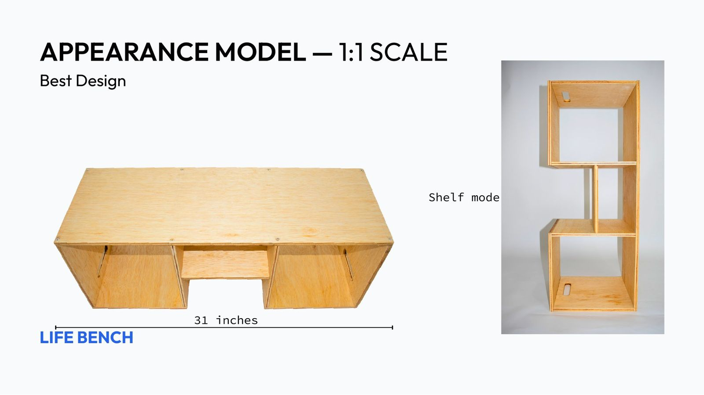

Industrial design · Ideation · Model making
Life Bench
Three rounds of constraints, ending in a bench that keeps kids and their things together

The problem
The brief: design an object that helps a person close, lock or secure something. Each round added new constraints that forced a fresh solution.
My role
I worked alone through 20 precedent examples, three rounds of sketches and three full-scale appearance models.
Process
Round 1: no visible fasteners, one hand, white
This round produced a desk clamp: a pencil holder and paper bed with hidden magnets, operable with one hand.

Round 1 ideation sketches 
Desk Clamp appearance model, 1:1 Round 2: IKEA-style, made for kids
This round produced a communal bench that secures a child and their items, like books and toys.

Round 2 ideation sketches 
IKEA-style bench appearance model Round 3: single use
This round produced the Gather Box, a gift box with separate compartments that each participant breaks into once.

Round 3 ideation sketches 
Gather Box appearance model
Outcome
I developed the strongest idea into the Life Bench, a plywood bench for kids that also works as a shelf.

